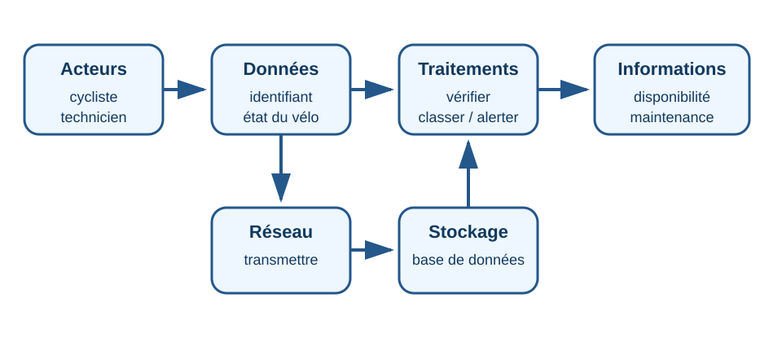
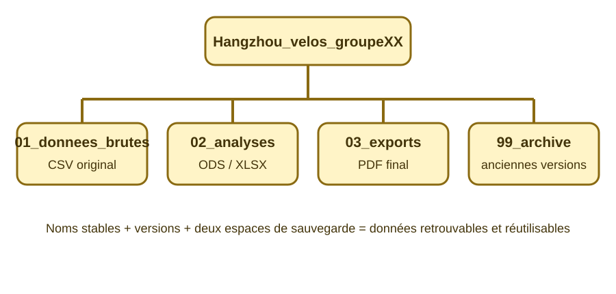

🗂️ Organiser les données d’un service de vélos partagés
Mission : comprendre le système d’information d’un service fictif de vélos à Hangzhou, organiser ses fichiers et exploiter ses données pour préparer une décision.
🇨🇳 Situation déclenchante — Hangzhou 杭州, Hángzhōu
Une équipe scolaire fictive prépare un service de vélos partagés pour relier plusieurs établissements. Elle reçoit des fichiers mal nommés, des dossiers mélangés et un tableau de données difficile à exploiter. Les informations utiles existent, mais personne ne sait rapidement où les retrouver ni comment les comparer.
Les données et l’organisation proposées dans cette séquence sont entièrement simulées. Elles servent uniquement à apprendre.
Problématique
Comment un système d’information permet-il de collecter, organiser, stocker, retrouver et exploiter des données afin de rendre un service fiable ?
🎯 Compétences de technologie
- 5e_C1.3 : décrire le rôle des systèmes d’information dans le partage d’information.
- 5e_C1.4 : recenser des données, les identifier, les classer, les représenter, les stocker et les retrouver dans une arborescence.

📌 CRCN observable, tracé et justifié
| Compétence exacte | Niveau visé | Repère pour enseigner — verbatim | Action observable | Trace produite |
|---|---|---|---|---|
| CRCN 1.2 — Gérer des données | 2 | « Sauvegarder des fichiers dans l’ordinateur utilisé et dans un espace de stockage partagé et sécurisé, afin de pouvoir les réutiliser. » | Créer une arborescence imposée, renommer et déplacer six fichiers, puis enregistrer une copie dans deux espaces distincts. | Capture de l’arborescence et archive ZIP du dossier de groupe. |
| CRCN 1.3 — Traiter des données | 2 | « Insérer, saisir et trier des données dans un tableur pour les exploiter. » | Importer le CSV, ajouter une colonne, saisir un statut, trier et filtrer les lignes. | Fichier ODS/XLSX transformé et export PDF du tableau filtré. |
Règle : utiliser un ordinateur n’est pas une compétence. Les compétences sont validées uniquement par les transformations observables et les fichiers remis.
🧭 Séance 1 — Comprendre un système d’information
Activité 1 — Qui produit, transporte, traite et utilise l’information ?
Consigne : observe le schéma puis classe les éléments suivants : cycliste, QR code, application, réseau, serveur, base de données, technicien, tableau de bord.
Production attendue : un tableau à quatre colonnes : acteur / donnée produite / traitement / information utilisée.
🆘 Aide graduée
Commence par repérer les personnes. Cherche ensuite ce qui est mesuré ou saisi, puis ce qui est calculé, enfin qui utilise le résultat.
✅ Correction exhaustive
Le cycliste produit une demande de location ; le QR code fournit l’identifiant du vélo ; l’application transmet la demande ; le réseau transporte les données ; le serveur vérifie les droits et la disponibilité ; la base stocke les locations ; le technicien consulte les alertes ; le tableau de bord présente les vélos disponibles ou à maintenir.
Erreur fréquente : confondre le système d’information avec l’ordinateur seul. Le système comprend les personnes, les règles, les données, les logiciels, les matériels et les réseaux.
🗃️ Séance 2 — Classer, nommer et retrouver des fichiers

Activité 2 — Reconstruire une arborescence réutilisable
Consigne : crée le dossier Hangzhou_velos_groupeXX, puis les sous-dossiers 01_donnees_brutes, 02_analyses, 03_exports et 99_archive. Renomme et range les six fichiers indiqués par le professeur.
Règle de nommage : AAAA-MM-JJ_type_contenu_version.ext.
Production attendue : capture de l’arborescence ouverte et archive ZIP du dossier complet.
🆘 Aide graduée
Les fichiers reçus restent dans « données brutes ». Les fichiers modifiés vont dans « analyses ». Les documents destinés à être diffusés vont dans « exports ». Les anciennes versions vont dans « archive ».
✅ Correction exhaustive
- CSV original → `01_donnees_brutes` ;
- tableur transformé → `02_analyses` ;
- PDF de synthèse → `03_exports` ;
- ancienne version → `99_archive`.
La copie locale et la copie partagée doivent porter le même nom de version.
Erreur fréquente : créer des dossiers « divers », « nouveau » ou « à voir », qui ne permettent pas de retrouver durablement les ressources.
📊 Séance 3 — Trier et filtrer pour décider
Activité 3 — Exploiter un jeu de données simulées
- Ouvre le CSV dans un tableur avec le séparateur point-virgule.
- Enregistre une copie dans
02_analyses. - Ajoute la colonne
statut_maintenance. - Saisis
prioritairelorsque le nombre d’incidents est supérieur ou égal à 3 ou lorsque l’autonomie est inférieure à 35 %. - Trie les vélos par nombre d’incidents décroissant.
- Filtre pour afficher uniquement les lignes prioritaires.
- Exporte le résultat au format PDF dans
03_exports.
Production attendue : tableur transformé, PDF filtré et conclusion de cinq lignes.
🆘 Aide graduée
Un tri change l’ordre des lignes. Un filtre masque temporairement les lignes qui ne répondent pas à un critère. Il ne faut pas supprimer les données originales.
✅ Correction exhaustive
Les vélos V-104, V-105, V-108 et V-112 doivent être marqués prioritaires dans le jeu fourni. Le tri place d’abord le vélo ayant le plus d’incidents. Le PDF final ne doit conserver que les lignes prioritaires.
Erreur fréquente : modifier le CSV original au lieu de travailler sur une copie, ou supprimer les lignes non prioritaires au lieu de les filtrer.
🌍 Transfert territorial — de Hangzhou à la Martinique
La même organisation fonctionnerait-elle pour un service scolaire à Fort-de-France ou Sainte-Luce ? Identifie au moins trois adaptations : qualité du réseau, humidité et corrosion, relief, fréquence de maintenance, distance entre les sites ou disponibilité des pièces.
✅ Bilan
Un système d’information associe des acteurs, des règles, des données, des matériels, des logiciels et des réseaux. Il permet de collecter, traiter, stocker, partager et retrouver l’information. Une arborescence, des noms de fichiers stables, des sauvegardes et des traitements de données rendent le service plus fiable.
🧠 Prêt·e à t’entraîner ?
Le QCM comporte 30 questions, dont des questions illustrées sur le système d’information, l’arborescence et le traitement des données.
🎁 Bonus (facultatif — hors parcours obligatoire)
- Imagine une règle permettant de supprimer automatiquement les doublons sans perdre de données importantes.
- Propose une arborescence pour un autre service : bibliothèque, cantine, jardin connecté ou club d’échecs.
- Compare les risques d’une base centralisée et d’une organisation distribuée entre plusieurs établissements.
💾 Sauvegarde locale des réponses textuelles
Les trois zones de réponse sont enregistrées uniquement dans ce navigateur.